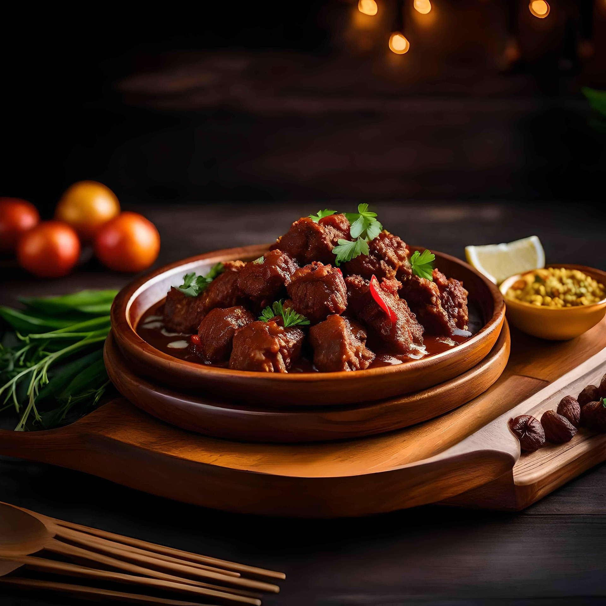

Rendang Daging Sapi
Rendang otentik Padang dengan daging sapi empuk dan bumbu rempah yang meresap sempurna. Hidangan kebanggaan Indonesia.
- Waktu Memasak
- Porsi
- 6 Porsi
- Tingkat Kesulitan
- Sedang

Bahan-bahan
Bahan Utama
- 1 kg daging sapi (sengkel atau paha), potong dadu besar
- 1,5 liter santan kental dari 2 butir kelapa
- 2 lembar daun jeruk purut
- 2 lembar daun kunyit
- 2 batang serai, memarkan
- 3 cm lengkuas, memarkan
- 2 sendok makan minyak goreng
- 1 sendok teh garam, atau sesuai selera
Bumbu Halus
- 10 butir bawang merah
- 6 siung bawang putih
- 4 cm jahe
- 3 cm kunyit, bakar
- 3 buah cabai merah keriting
- 2 buah cabai rawit (sesuai selera)
- 1 sendok teh ketumbar bubuk
- 1/2 sendok teh merica bubuk
Pelengkap
- Nasi putih hangat
- Ketupat atau lontong (opsional)
Cara Memasak
- Panaskan minyak goreng dengan api sedang. Tumis bumbu halus hingga harum dan matang, sekitar 5 menit.
- Masukkan serai, lengkuas, daun jeruk, dan daun kunyit. Aduk hingga wangi.
- Masukkan potongan daging sapi, aduk rata hingga permukaan daging berubah warna.
- Tuangkan santan encer (sisakan santan kental), didihkan sambil diaduk perlahan.
- Kecilkan api dan masukkan santan kental. Masak sambil terus diaduk agar santan tidak pecah dan tidak gosong.
- Lanjutkan memasak selama 2–3 jam hingga bumbu meresap sempurna, minyak kelapa terpisah, dan kuah mengental menjadi rendang kering.
- Koreksi rasa dengan garam. Angkat dan sajikan bersama nasi hangat.
Tips
Rendang akan lebih awet dan gurih jika dimasak dengan api kecil dan diaduk secara berkala hingga kuahnya kering. Sisa rendang justru makin lezat setelah disimpan semalam di kulkas.